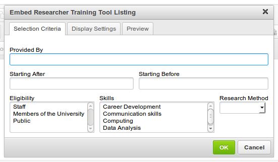
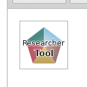
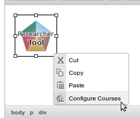

This plugin provides a user interface for configuring and embedding the Oxford Courses Widget (sometimes referred to as the Researcher Training Tool, as it is used to display courses for graduates and researchers).
-
Click on the Researcher Training Tool icon.
-
A dialog will appear, giving you the full configuration options for the training tool.

-
Selection Criteria
- Provided By:
- Starting After/Before:
- Eligibility:
- Skill:
- Research Method:
-
Display Settings
- Title:
- Columns to display:
- Default dates view:
- Show without dates link:
Click the Preview tab to see how the widget will be output on the page.
-
-
When you are finished configuring the courses, click OK to embed the tool.

-
If you wish to configure the tool after emedding it, right-click the placeholder and click "Configure Courses".
